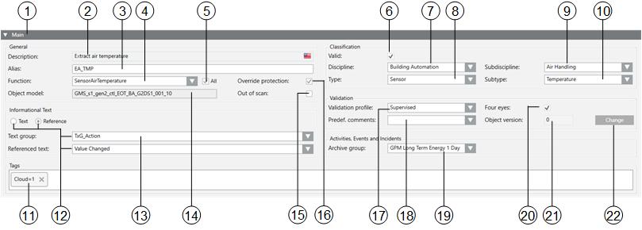

Main Expander
In the Main expander, you can:
- Edit the description of object names
- Define an alias name
- Define a service text
- Assign a new Function
- Temporarily take the object out of scan
- Edit object assignment to electrical and mechanical installation
- Define individual data points for critical environment
- Define override protection
- Define tags

| Name | Description |
1 |
| Symbol indicates a bulk engineering selection of more than one data point. |
2 | Description | Describes the data point name. You can edit and translate the data point by clicking the country flag. |
3 | Alias | An alternative description for the data point name, available for user-defined information. Do not use the following characters: * , ? , @. |
4 | Function | Displays the associated Function. |
5 | All | Selected: Displays all Functions in the system. |
6 | Valid | Displays, based on the color code, the source used for inheriting the information. |
7 | Discipline | Category of the discipline (for example, Life Safety). |
8 | Type | Category of the corresponding type (for example, Zone). |
9 | Subdiscipline | Description of an object (for example, Detection for Life Safety discipline). |
10 | Subtype | Description of object (for example, Zone 1 for type Zone). |
11 | Tags | Use tags to identify objects in other application. For example, |
12 | Informational Text | Select an option to create an instruction or a technical reference text:
|
13 | Object model | Displays the associated Object Model. |
14 | Out of scan | Select this check box if you want the data point to be temporarily taken out of scan. |
15 | Override protection | The Override protection checkbox is automatically selected when making manual changes in the Main expander. Selected: Manual changes are not overwritten during data import. Cleared: Any changes are lost during the next data import if the checkbox is manually cleared. |
16 | Validation profile | Individual or multiple plants, parts of plants, or objects that monitor a critical environment (for example, Pharma) can be selected. Disabled = No system monitoring. Enabled = Requires a comment. Supervised = Requires user authentication (password), and a comment. Monitored = Requires supervisor authentication (name and password). |
17 | Predef. | Predefined comments. Allows you to select a table with predefined text options that can be entered into the Comment field when validation is required. To create one or more validation-specific text groups for predefined comments, go to the following location: Project > System Settings > Libraries > L4-Project > Common > Common > Texts. Consider naming the text groups ValidationPredefinedComments[additional identifier] or something similar. In this example, if you use Primary as the additional identifier, the text group would display as TxG_ValidationPredefinedCommentsPrimary in the Predef. comments drop-down. For more information on creating standard texts, see Adding a text group. |
18 | Archive group | Lets you select the HDB archive group that values of this object are saved to. |
19 | Four eyes | If selected, any user validation requires confirmation by a supervisor. |
20 | Object version | Displays the number of saved user changes made to this object. The counter is increased by +1 for each Save In Edit mode, any number can be entered. The counter can be reset to 0 when handing the project to the customer. |
21 | Change | Changes to the Edit mode for the Object version. |
 to the counter if an option is set on the Validation profile.
to the counter if an option is set on the Validation profile.Valid
Inheritance Rules for Object Model, Function, and Object | ||
Icon | Color | Description |
| White | No value is inherited. |
| Grey | The project instance value is inherited. |
| Green | The Function inherits the value. |
| Blue | The Object Model inherits the value. |
| Question mark with a yellow background. | The value is undefined until the instance is saved. |


While you change inheritance properties, you cannot disable an inheritance. As a result, the state changes from  to
to  or
or  when editing. This display for the inheritance function is used for the Main, Properties, Details, and Alarm Configuration expander.
when editing. This display for the inheritance function is used for the Main, Properties, Details, and Alarm Configuration expander.
Alias (User Designation)
As an alternative to describing the data point name, you can enter a freely definable text as user designation. In System Manager, you can search for aliases (filter search), and the alias displays in the Textual Viewer and in the tooltips. It can display in Event List, notification messages, Journaling templates, Trend legends and so on.
The information is taken over in the Alias names during a SiB-X data import if the user designation was previously created using the engineering tool.

Any changes to the Alias names in Desigo CC are lost when reimporting SiB-X data.
Discipline, Subdiscipline, Type, Subtype
Use predefined information to define where the corresponding Function is used.
Entries for Discipline, Subdiscipline, Type and Subtype have a direct influence on alarm forwarding, Scopes, and search criteria in Desigo CC.
Out of Scan
You can temporarily take a data point out of service using the Out of scan function. This makes sense when you need to service a sensor or sensor group. No alarm is triggered as long as the function is selected.
Override Protection
The system protects manual customizations of the main object attributes from being overridden by subsequent bulk updates such as import and discovery procedures. In fact, after any manual modification in the Main expander of the Object Configurator tab, the Override Protection check box gets automatically selected. At that point, if you want the import and discovery procedures to update the main attributes of that object again, you need to deselect the Override Protection check box. The list of main object attributes includes: Description, Function, Alias, Discipline, Subdiscipline, Type, and Subtype.
Validation Profile
Certain critical environments (for example, pharmaceutical installations) require a high level of security. Any changes made by the user must be logged for tracking purposes.
Actions Logged in History Database (Activity Log) | |||
Actions to be Logged | Disabled | Critical | Supervised |
Log commands to status properties | Yes | Yes | Yes |
Log commands to configuration properties | Yes | Yes | Yes |
Log configuration changes | No | Yes | Yes |
Comments for commands to status properties | No | Required | Required |
Comments for commands to configuration properties | No | Required | Required |
Comments for configuration changes | No | Required | Required |
Reauthentication for commands to status properties | No | No | Yes |
Reauthentication for commands to configuration properties | No | No | Yes |
Reauthentication for configuration changes | No | No | Yes |
Increment version numbering on configuration changes | No | Yes | Yes |